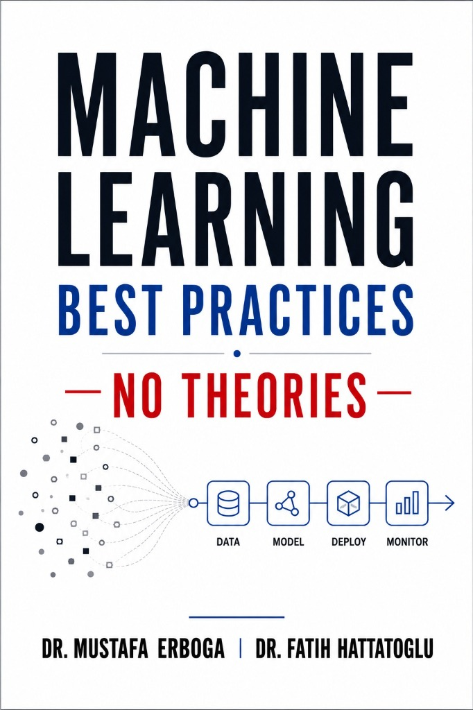

Feature Engineering
A practical guide to feature engineering for ML engineers and data scientists.
View on AmazonData Science · Machine Learning · AI Consulting
I'm Fatih Hattatoglu — data scientist, AI consultant, author, and educator with over 25 years of experience in education and applied analytics. I build machine learning and computer vision systems, write books on applied AI, and lecture on data science at universities and professional training programs.
My background combines a PhD, a long teaching career, and hands-on work in applied analytics. Today I split my time between three things: consulting on AI and data science projects, writing technical books and articles, and teaching — from university lectures to professional training programs.
On the technical side, I work mostly on machine learning, deep learning, and computer vision, with a growing focus on agentic LLM systems and MLOps. I care as much about how models reach production — pipelines, monitoring, deployment — as about the models themselves, and I use Tableau and data storytelling to make results legible to non-technical audiences.
Python, SQL, Pandas, Scikit-Learn, TensorFlow, PyTorch, LangChain, FastAPI, Docker, AWS, Databricks, Tableau
Beyond building systems, I spend a large part of my time teaching AI and talking about it — in classrooms, at universities, and online.
Courses on machine learning, CNNs & computer vision, SQL, statistics, and Tableau.
Guest lectures and seminars on AI and data science at universities.
Author of technical books on applied machine learning, published on Amazon.
Technical columns and articles on Medium and in newspapers.
Directing end-to-end data science projects from scoping to delivery.
Advisory work on industrial AI and data science initiatives.
Recorded talks and interviews on AI and the data profession.
Active member and contributor in AI and data communities.
Technical books I've written on applied machine learning, available on Amazon.
A practical guide to feature engineering for ML engineers and data scientists.
View on Amazon
A straightforward introduction to convolutional networks and computer vision.
View on Amazon
Building, deploying, and monitoring ML systems in production — no theory, all practice.
View on AmazonOpen-source work from my GitHub, spanning computer vision, agentic AI, and data engineering.

Real-time object counting for conveyor belts using YOLOv26 with custom coordinate-based counting logic.

An agentic platform that processes multi-format invoices with LLMs and structured parsing for automated accounting.

End-to-end ETL pipeline and BI dashboard for NYC housing trends, built on the Bronze–Silver–Gold medallion pattern.

A multi-agent system for industrial predictive maintenance, with three specialized agents collaborating over a RAG pipeline.

An end-to-end MLOps pipeline for real-time credit card fraud detection, from training through monitored production deployment.
Live, interactive dashboards from my Tableau Public profile — click a tab and explore the data right here.
Recent technical articles on Medium.
I'm open to consulting engagements, teaching collaborations, and interesting data problems. The fastest way to reach me is email or LinkedIn.